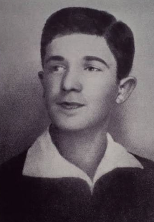
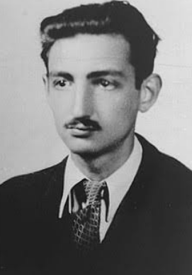
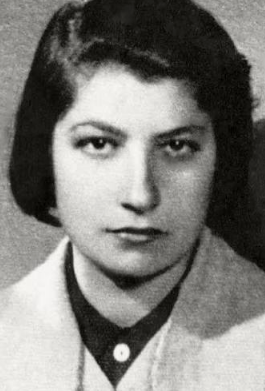
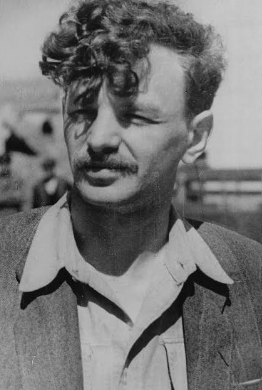

The Warsaw Ghetto Uprising was led by brave men and women who chose to resist Nazi Germany. Although they had very few weapons, they organized resistance groups and fought for their freedom and dignity.
Contents
Mordechai Anielewicz

Mordechai Anielewicz was the commander of the Jewish Combat Organization (ŻOB). He helped organize the resistance inside the Warsaw Ghetto and became one of the most important leaders of the uprising.
During the fighting, he encouraged Jewish fighters to continue resisting despite the difficult situation. Today he is remembered as a symbol of courage and resistance.
"The dream of my life has become a reality. Jewish self-defense in the ghetto has become a fact."
This statement was written by Mordechai Anielewicz during the Warsaw Ghetto Uprising. It reflects the determination of the Jewish resistance fighters.
Marek Edelman

Marek Edelman was one of the leaders of the uprising. He worked with other members of the resistance to prepare defenses and organize fighters.
Unlike many other leaders, Edelman survived the war. After the Holocaust, he continued to speak about the events of the uprising and the importance of remembering its history.
Zivia Lubetkin

Zivia Lubetkin was a member of the Jewish resistance and one of the few women leaders of the uprising. She helped organize underground activities inside the ghetto.
During the fighting, she worked closely with other resistance members and later helped tell the story of the uprising to future generations.
Yitzhak Zuckerman

Yitzhak Zuckerman was an important resistance leader. He helped organize the underground movement and supported the fighters during the uprising.
After the war, he worked to preserve the memory of the Warsaw Ghetto Uprising and shared his experiences through books and public speeches.